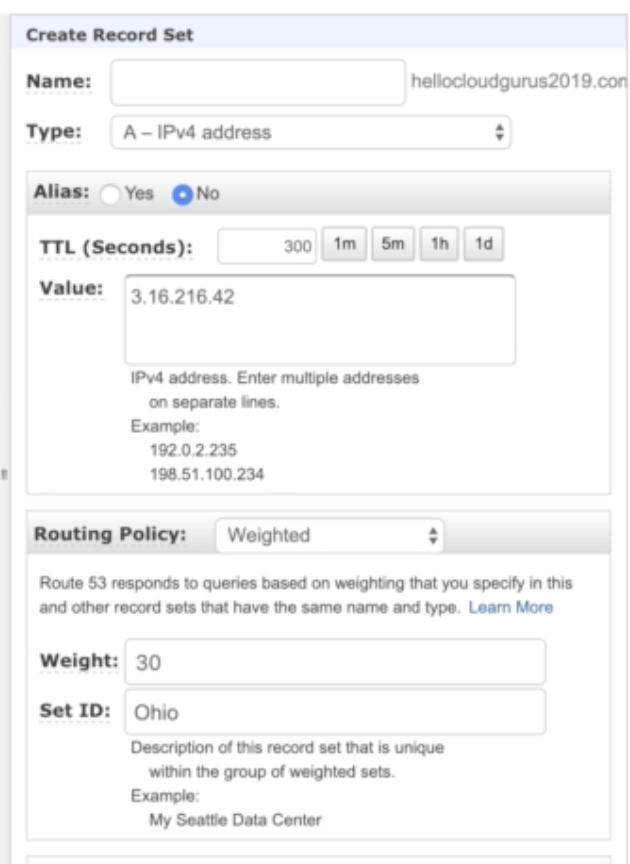
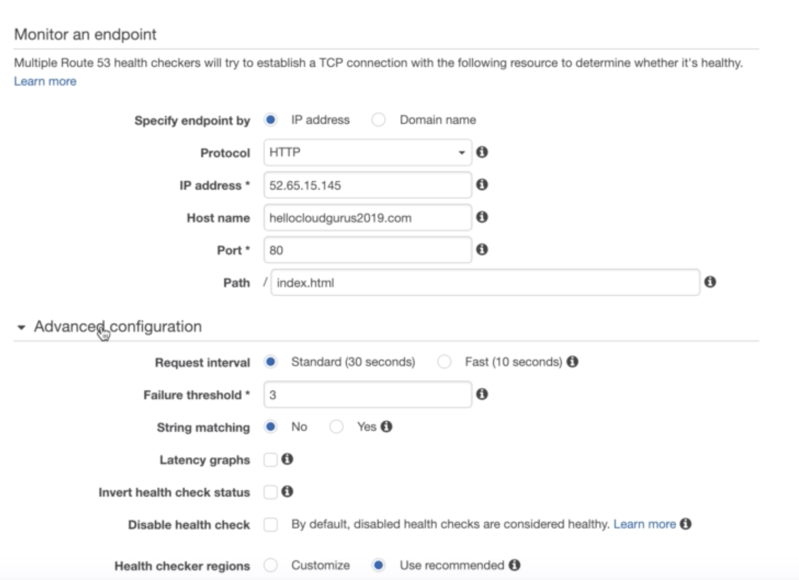

AWS Note
VPC related
-
Each VPC can have only one IGW (Internet Gateway)
-
Need to create Security Group to allow traffice from Public Subnet to talk to Private Subnet
- Allow ICMP and Open port to the Public Subnet
-
Allow port 80, 443, 3306 and 22 to Public Subnet
-
Nat Instance Note
- Must be created in public subnet, use public SG
- Have to disable 'Source and Destination Check'
By click instance => Actions => Networking => Source/Dest-Check -
Add 0.0.0.0/0 to that NAT instance to the default route table of VPC
-
NAT Gateway
- NAT Gateway requires one Subnet and one EIP(Elastic IP)
-
Add 0.0.0.0/0 to that NAT Gateway to the default/main route table of VPC
-
VPC Endpoint
- Create Endpoint and pick com.aws.us-west-2.s3
- That will create a new route in the main routing table
Note: This can take quite long to populate the new route - On the EC2 Instance with S3 role attached, run
aws s3 ls --region us-west-2
EC2 related
EC2 Instance role
- Add a IAM role and assign permissions
- Change EC2 Instance to use the role
AutoScaling Group
- Pick VPC and Subnets
- If use scaling policies, set Instance warm up (Instance needs xx seconds to warm up after scaling)
- Send notification after scaling
Launch Config
- Pick IAM role for the instance
- Can pick Assign public IP to every instance or
Do Not assign public IP or
Only assing a public IP to instances launched in the default VPC and subnet (defult)
Route53
Simple routing
- Create Record Set
- Pick Type: A - IPv4 Address
- Pick "No" for Alias
- Put a list of IPs to "Value:"
- Choose "Simple" for Routing Policy
Weighted routing
- Create 1st Record Set
- Pick Type: A- IPv4 Adress
- Choose "Weighted" for Routing Policy
- Give a weight, say 30
-
Give a name (Set ID)
-
Create 2nd Record Set
- Pick Type: A- IPv4 Adress
- Choose "Weighted" for Routing Policy
- Give a weight, say 20
- Give a name (Set ID)

Route53 Health Check
- Health check can be added to any of the Record Set
- Can set normal or faster check (every 10 sec)
